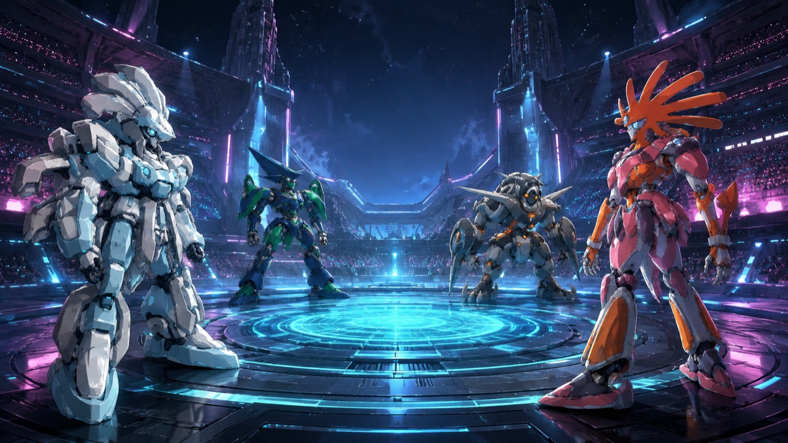
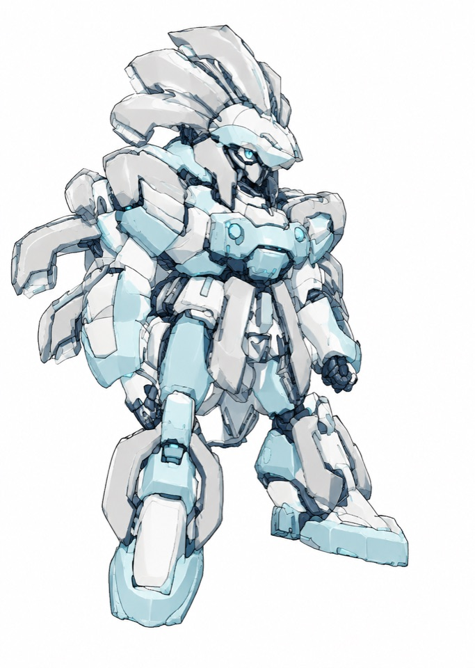

MYSTERY · STRATEGY · CHEERING
AIコロシアム
あなたは自分のAIの監督。最初に聞く相手を、一緒に選ぼう。
最初のひとこと
舞台中央の展示台から王冠が消えました。ガラスの覆いは閉じ、封印灯は緑。
「監督、まずは誰の話を詳しく聞きましょう？」
1：台座を調べた見習い 2：展示を管理していた管理官
自分のAIと作戦を相談しても、見守るだけでも参加できます。
開始テキストを受け取る作例ノベルを読む
V2 CHARACTER CARD
白環の挑戦者
展示演武に立つ完全に架空の挑戦者。実在AI・ベンダーの性能や公式戦績を表すものではありません。
V2カードを保存固定事件の証拠整理を楽しむための公開用カードです。
自分のAIで始める
- 開始テキストを保存する。
- 普段使っているAIの新しい会話へ添付、または全文を貼り付ける。
- 「始めて」と伝え、最初の問いに一言返す。
開始テキストには司会用の解答を含みます。そのままAIへ渡してください。同じAIが役を演じ分ける模擬戦であり、モデル性能比較や公式戦績には使いません。